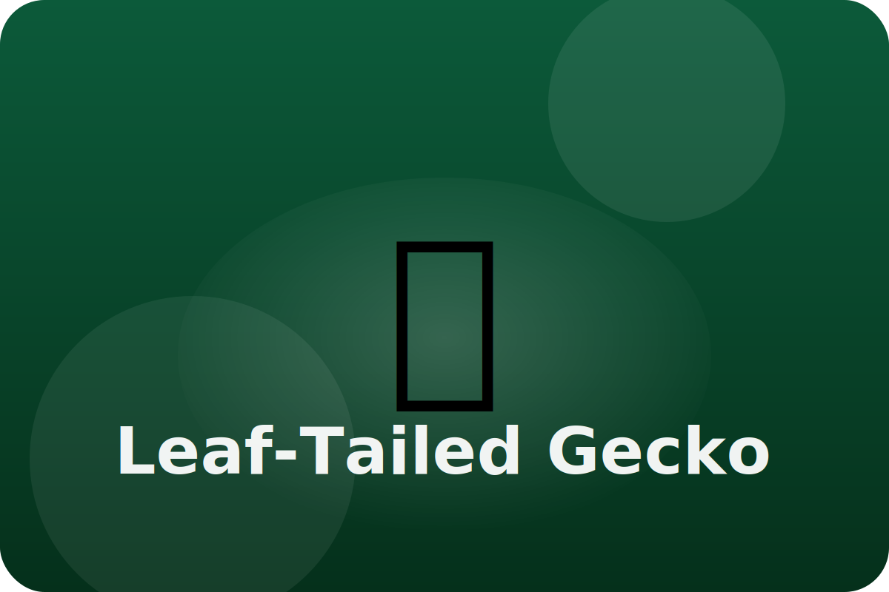

Rainforest
Looking just like a leaf
Leaf-tailed geckos sleep flat against tree trunks during the day. Most predators never notice them.
Leaf-Shaped Tail
A wide, flat tail with ragged edges looks exactly like a leaf, hiding the gecko from sight.
Skin Patterns
Bumps and speckles on its skin match moss and bark textures for extra camouflage.
Quiet Movements
The gecko moves carefully at night to catch insects without giving away its hiding spot.
Keep exploring the Leaf-Tailed Gecko
Watch the Leaf-Tailed Gecko in action
Leaf-tailed gecko videos for kids